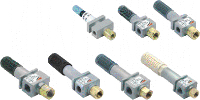
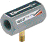
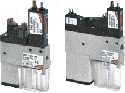
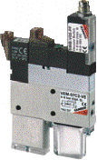

Вакуумные эжекторы. Серия VEB. Области применения: Достоинства: Линейные вакуумные эжекторы. Серия VED. Компактные вакуумные эжекторы. Серия VEC. Типовые области применения: Достоинства: Компактные вакуумные эжекторы. Серия VEM

- Промышленные роботы наво многих отраслях промышленности
- Система подачи прессов в автомобильной промышленности.
- Большой срок службы без необходимости обслуживания
- Компактность
- Отсутствие нагрева
- Малая масса
- Быстрое создание вакуума
- Установка в любом положении

Линейные вакуумные эжекторы без подвижных частей, работа которых основана на принципе Вентури. Предназначены для установки между присоской и источником сжатого воздуха

Вакуумный генератор со встроенными распределителями, разрешающими вакуумирование и сброс, вакуумным реле
Не требуют внешних распределителей
Доступно исполнение с системой экономии сжатого воздуха.
Обычно используются в автоматизированных транспортных системах
- Промышленные роботы на промышленных участках
- Система подачи прессов в автомобильной промышленности
- Простые установка и обслуживание
- Компактность
- Малая масса
- Быстрая генерация вакуума

Вакуумные генераторы Серии VEM схожи с эжектормами Серии VEC, но имеют меньший вес и габаритные размеры.